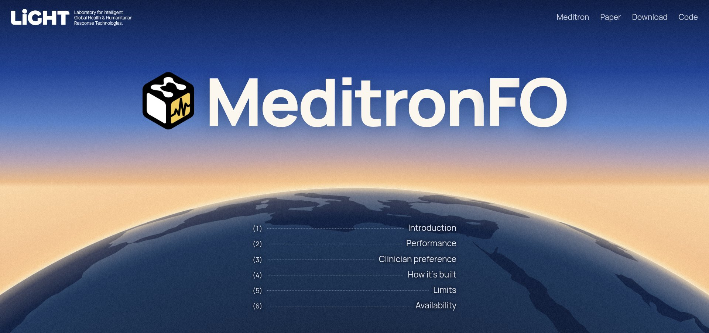

Meditron

Open medical AI models, built and tested with clinicians around the world.
Talk to MeditronWhere clinicians tested Meditron
The three commitments
- Openness
- Clinical grounding
- Real-world evaluation
What is Meditron
Meditron is a family of open medical AI models: large language models trained to answer clinical questions. Anyone can download them, run them on their own hardware and adapt them, from a hospital in Switzerland to a health post in Malawi.
Two things set it apart. It is open down to the training data, so clinicians, regulators and patients can check what it learned. And it is tested by clinicians: at MOOVE events they put questions from their own practice to the models and vote for the better answer.
-
2023
Meditron 1
Open weights
7B and 70B models on Llama-2, pretrained on PubMed and international clinical guidelines.
-
2024
Clinicians step in
Sixteen physicians grade Meditron's answers, and MOOVE events at CHUV, Lausanne, put the models to hospital specialists.
-
2025
Meditron 3
Open weights
8B and 70B models on Llama-3.1, co-designed with clinicians and humanitarian experts.
-
2026
MeditronFO
Fully open
Data, code and models, on Apertus and four other open bases; MOOVE reaches primary care in Kenya, Tanzania and Malawi.
Talk to Meditron
Ask a medical question. It is a research model, not a doctor: it can be wrong, and it knows nothing about you beyond what you type.
Meditron can be wrong. It is a research model, not a doctor. Use with care.
Meet our latest project
The first medical AI where every step is open, from the data to the evaluation.

Cite Meditron
Theimer-Lienhard, X., El-Amin, M., Elhassan, F., Vaidya, S., Cartier-Negadi, V., Sasu, D., Klein, L., & Hartley, M.-A. (2026). Fully Open Meditron: An Auditable Pipeline for Clinical LLMs. arXiv:2605.16215.
@misc{theimerlienhard2026fullyopenmeditronauditable,
title={Fully Open Meditron: An Auditable Pipeline for Clinical LLMs},
author={Xavier Theimer-Lienhard and Mushtaha El-Amin and Fay Elhassan and Sahaj Vaidya and Victor Cartier-Negadi and David Sasu and Lars Klein and Mary-Anne Hartley},
year={2026},
eprint={2605.16215},
archivePrefix={arXiv},
primaryClass={cs.AI},
url={https://arxiv.org/abs/2605.16215}
}Contact
Questions about Meditron? Write to admin-light@epfl.ch.
Credits
Built at EPFL's LiGHT lab with the Swiss AI Initiative and compute from CSCS (Alps). Thanks to the clinicians of the MOOVE initiative and the LiGHT physician review panel.